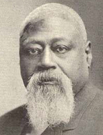

|

|

|
|
|
Born a slave in Saint Louis, James Milton Turner was the son of a black veterinarian and a
slave woman. His father purchased the freedom of Turner and his mother in 1844.
Turner was educated in a clandestine Roman Catholic school for slaves and later
attended Oberlin College preparatory department, 1855-56. Upon his father's
death in 1856, Turner returned to Saint Louis, where he worked for Madison
Miller, a prominent politician and railroad promoter. At the outbreak of the
Civil War, Turner accompanied Miller into the Union army as a body servant.
Believing that Miller had been killed at Shiloh, Turner returned to Saint Louis,
and delivered $4,000 of Miller's money to his wife. In fact, Miller had been
captured by Confederate forces, and, on Miller's release from prison, Turner
received a $500 reward.
In 1865, Turner helped organize the Missouri Equal Rights League and worked
to establish black schools in the state. He taught in Kansas City's first
tax-supported school for blacks. Appointed in 1865 as Missouri's assistant
superintendent of education, Turner became the state's most important black
politician during the period of Radical rule, which ended in 1870. In 1871,
President Grant named him American ambassador to Liberia, which he remained
until 1878. Upon his return to the United States, he unsuccessfully sought
nomination to Congress. In 1879, Turner was active in assisting black emigrants
from the South to Kansas, many of whom came via Saint Louis. He organized the
Colored Immigration Aid Society to establish black colonies in the West but
accomplished little because of rivalries involving various black and white aid
organizations. In 1883, Turner visited Oklahoma to assist black migrants there.
During the 1880s, Turner became involved as an attorney in the effort to win
for Cherokee freedmen a share of the funds appropriated by Congress for the
Cherokee nation for lands taken from them at the end of the Civil War. He joined
the Democratic party in 1885, possibly to better promote this cause after the
election of Grover Cleveland as president. In 1895, Turner finally won a court
decision for the Cherokee freedmen. He died in Ardmore, Oklahoma, a victim of a
railroad tank-car explosion.
Source: Eric Foner, Freedom's Lawmakers: A Directory of Black
Officeholders during Reconstruction (New York: Oxford University Press,
1993), 216.
|